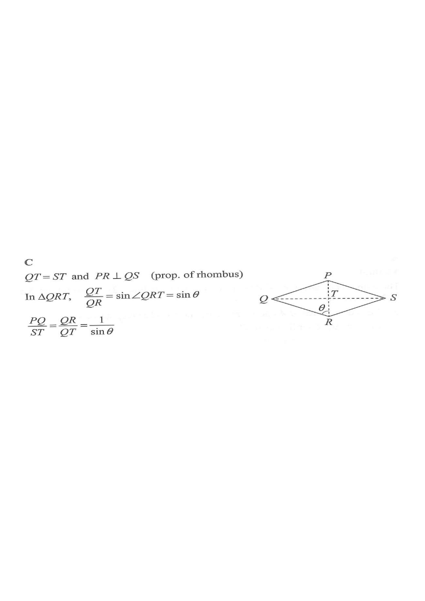

Tap / scroll the solution steps — the diagram highlights each part.
It is given that $PQRS$ is a rhombus. Let $T$ be the point of intersection of $PR$ and $QS$.
If $\angle QRT=\theta$, then $\dfrac{PQ}{ST}=$

In a rhombus the diagonals bisect each other at right angles:
$$QT=ST,\qquad PR\perp QS$$
So $\triangle QRT$ is a right-angled triangle at $T$, and since $PQ=QR$ (all sides equal), $PQ = QR$.
Right angle at $T$. With $\angle QRT=\theta$:
$$\sin\theta=\frac{\text{opposite}}{\text{hypotenuse}}=\frac{QT}{QR}$$
Equivalently, $\dfrac{QT}{QR}=\sin\theta$.
Since $QT=ST$ and $QR=PQ$:
$$\sin\theta=\frac{QT}{QR}=\frac{ST}{PQ}$$
Hence, taking reciprocals,
$$\frac{PQ}{ST}=\frac{1}{\sin\theta}$$
Answer: C — $$\boxed{\dfrac{PQ}{ST}=\dfrac{1}{\sin\theta}}$$
Question. \(PQRS\) is a rhombus whose diagonals meet at \(T\). If \(\angle QRT=\theta\), find \(\dfrac{PR}{QS}\).